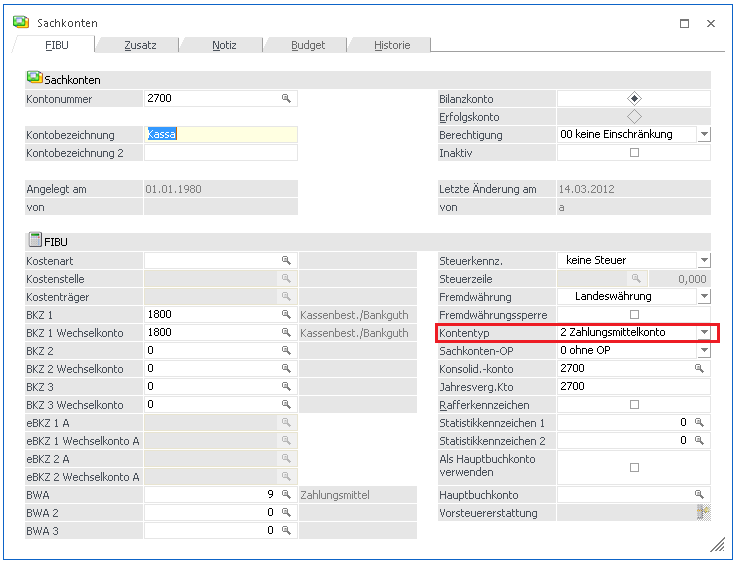
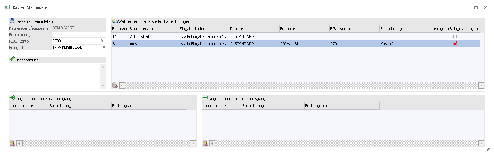
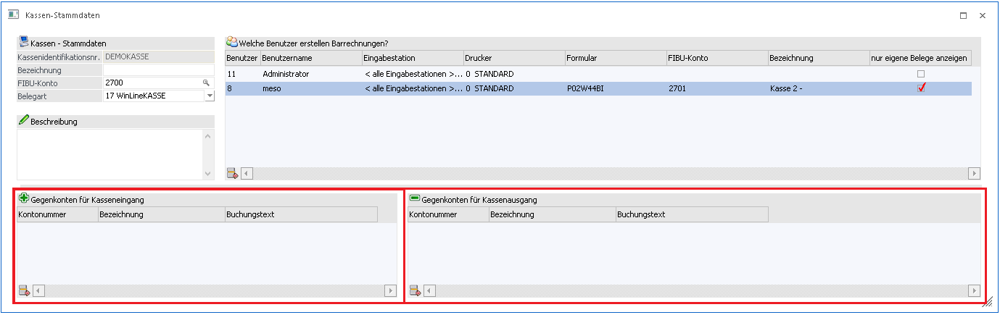
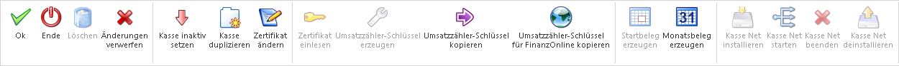

In der WinLine FAKT gibt es den Menüpunkt
1 Stammdaten
1 Kassen-Stammdaten,
wo die Einstellungen für die Kasse(n) festgelegt werden können. Derzeit kann pro Mandant eine Kasse eingerichtet und verwendet werden. Der Menüpunkt "Kassen-Stammdaten" kann nur von einem Admin geöffnet werden. Es wird ein eigener Lock gesetzt, damit nicht mehrere Benutzer gleichzeitig den Kassenstamm bearbeiten können.
Beim ersten Öffnen des Fensters "Kassen-Stammdaten" sind die Eingabefelder und die Tabellen leer, es muss zumindest die Kassenidentifikationsnummer, das FIBU-Konto und ein Benutzer eingetragen werden, um das Fenster mit OK verlassen und die anderen Kassen-Menüpunkte verwenden zu können. Zusätzlich können eine Bezeichnung und ein Beschreibungstext für die Kasse eingegeben werden.

Die Kassenidentifikationsnummer kann frei vergeben werden, sobald im Datenerfassungsprotokoll Buchungen vorhanden sind, kann die Kassenidentifikationsnummer jedoch nicht mehr verändert werden.
Als FIBU-Konto muss ein vorhandenes Zahlungsmittelkonto eingetragen werden. In der Autovervollständigung und im Matchcode für das FIBU-Konto werden nur Zahlungsmittelkonten angezeigt.
Anlage eines Zahlungsmittelkontos
Mit dem Cockpit-Eintrag "Sachkonten" im Verwaltungscockpit der Kasse kann der Menüpunkt Sachkonten aufgerufen werden. Hier kann in der Maskierung bei der Option "Kontentyp" eingestellt werden, dass es sich um ein Zahlungsmittkonto handelt.

Signatur/Zertifikat
Um eine Kasse verwendet zu können muss die Art der Signatur gewählt werden. Nach der Wahl der Signatur müssen die notwendigen Daten hinterlegt werden und das Zertifikat mittels Button "Zertifikat einlesen" eingelesen werden. Nach erfolgreichen Einlesens des Zertifikats muss ein 32-stelliger Code zur Verschlüsselung des Umsatzzählers eingegeben werden, oder mittels Button "Umsatzzähler-Schlüssel generieren" automatisch generiert werden. Um den Finanz Online relevanten 44-stelligen Code zu bekommen, muss der Button "Umsatzzähler-Schlüssel für FinanzOnline kopieren" gedrückt werden. Anschließend befindet sich der Code in der Zwischenablage von Windows und kann eingefügt werden.

0. Keine Signatur
Diese Option kann beim Anlegen einer Kasse gewählt werden, wenn diese z.B. nicht in Österreich verwendet wird und somit Belege welche mit dieser Kasse erfasst werden, nicht signiert werden müssen.
Hinweis:
Beim Update von WinLine Version 10.2 auf WinLine Version 10.3 wird eine schon vorhandene Kasse mit dieser Option übernommen. Wenn für Kassen mit der Option "Keine Signatur" bereits Belege vorhanden sind, kann diese Option nachträglich nicht abgeändert werden. Die Kasse muss anschließend Inaktiv gesetzt werden und kann im diesen Zuge direkt mit allen vorherigen Einstellungen kopiert und die Kassen-ID verändert werden.
1. Signaturkarte

Ø Karten ID:
Wird beim Einlesen der Zertifikats automatisch befüllt
Ø PIN:
Der bei der Karte hinterlegte PIN-Code muss in dieses Feld eingetragen werden, damit die Signierung erfolgreich am Beleg vollzogen werden kann
Ø Zertifikatsseriennummer:
Hier ist nach erfolgreichen Einlesens des Zertifikats die Seriennummer des Zertifikats ersichtlich, welche auch bei der Anmeldung der Signaturerstellungseinheit beim Finanz Online gebraucht wird.
Ø Zertifikat-Organisation:
In diesem Feld wird die Organisation welche das Zertifikat verwaltet, dargestellt.
Ø Aussteller-Organisation:
Anhand dieses Eintrags kann die Ausstellende Organisation der Zertifikatseinheit eingesehen werden.
Ø Workstation:
Beim Einlesen der Signatur wird hier automatisch die gerade verwendete Workstation eingetragen und diese wird als Zugriffspunkt der Signatureinheit verwendet.
Ø Port:
Hier wird der Port eingetragen, welcher für die Erstellung des Zertifikats verwendet wird. Dieser wird standardmäßig mit Port 51000 vorbelegt.
Ø Umsatzzähler-Schlüssel:
Hier muss ein 32-stelliger Code eingegeben werden. Dieser Dient zur Verschlüsselung des Umsatzzählers im Datenerfassungsprotokoll. Dieser Code kann mittels Ribbon-Button "Umsatzzähler-Schlüssel erzeugen", erzeugt werden.
Ø Zertifikat-Name:
Hier ist nach dem Einlesen des Zertifikats der Name des eingelesenen Zertifikats zu sehen.
Ø Aussteller-Name:
Hier ist nach dem Einlesen des Zertifikats der Name des Ausstellers des Zertifikats zu sehen.
2. Online-Signatur (HSM)

Ø Zertifikats-URL:
Hier muss vom Zertifikatsaussteller die Internetadresse (URL) hinterlegt werden, auf welche beim Signieren von Belegen zugegriffen wird.
Ø Benutzername:
Beim Zertifikatsaussteller muss auch ein Benutzernamen für die Signierung vorhanden sein. Dieser Benutzername muss hier eingetragen werden.
Ø Zertifikatsseriennummer:
Hier ist nach erfolgreichen Einlesens des Zertifikats die Seriennummer des Zertifikats ersichtlich, welche auch bei der Anmeldung der Signaturerstellungseinheit beim Finanz Online gebraucht wird.
Ø Zertifikat-Organisation:
In diesem Feld wird die Organisation welche das Zertifikat verwaltet, dargestellt.
Ø Aussteller-Organisation:
Anhand dieses Eintrags kann die Ausstellende Organisation der Zertifikatseinheit eingesehen werden.
Ø FirmenGUID:
Wird ausschließlich für eine HSM Anmeldung in Verbindung mit Global Trust benötigt. Diese Feld wird erst freigeschalten, wenn das Programm eine gültige URL von Global Trust erkennt.
Ø Passwort:
Das beim HSM Zertifikat hinterlegte Password muss hier eingetragen werden.
Ø Umsatzzähler-Schlüssel:
Hier muss ein 32-stelliger Code eingegeben werden. Dieser Dient zur Verschlüsselung des Umsatzzählers im Datenerfassungsprotokoll. Dieser Code kann mittels Ribbon-Button "Umsatzzähler-Schlüssel erzeugen", erzeugt werden.
Ø Zertifikat-Name:
Hier ist nach dem Einlesen des Zertifikats der Name des eingelesenen Zertifikats zu sehen
Ø Aussteller-Name:
Hier ist nach erfolgreichem Einlesen des Zertifikats der Name des Ausstellers des Zertifikats ersichtlich
In der Tabelle
Ø Welche Benutzer erstellen Barrechnungen
kann festgelegt werden, welche Benutzer Barfakturen erfassen können. Nach der Eingabe der Benutzernummer (Mit Autovervollständigung oder Matchcode) wird der Name des gewählten Benutzers angezeigt.
Nach der Benutzereingabe kann die jeweilige Eingabestation ausgewählt werden, d.h. jene Workstation, an der der Benutzer Barfakturen erstellen darf. Hier können pro Benutzer mehrere Zeilen erfasst werden. Neben den Workstations aus der MSM-Tabelle, steht hier auch ein Eintrag "alle Eingabestationen" und ein Eintrag "EWL/MWL" zur Auswahl. Die Option "alle Eingabestationen" erlaubt dem zugewiesenen Benutzer an jeder Workstation Barrechnungen zu erfassen. Falls in der mobile WinLine Barrechnungen erstellt werden sollen, kann einem Benutzer die Option "EWL/MWL" hinterlegt werden.

Außerdem kann hier ausgewählt werden, auf welchen Drucker bei dieser Eingabestation die Ausgabe des Barbeleges erfolgen soll. Weiters kann das Formular definiert werden, das für gedruckte Barrechnung verwendet werden soll, wobei hier nur vorhandene Formulare mit dem hinterlegten P02W44 zulässig sind (ein Matchcode steht zur Verfügung).
Es ist auch möglich, in der Zeile ein abweichendes Kassenkonto zu hinterlegen, dieses muss ebenfalls ein vorhandenes Zahlungsmittelkonto sein. Wird kein Konto eingetragen, gilt das eingetragene Standard-Konto der Kasse. Bei der Erfassung eines Barbelegs wird vorrangig das hinterlegte abweichende Kassenkonto von dem jeweiligen Benutzer übernommen.
Außerdem kann in diesem Fenster definiert werden, welche Konten für Kassen-Eingangs- und Ausgangs-Buchungen im entsprechenden Menüpunkt verwendet werden können.

Hier können nur jene Konten eingetragen werden, die grundsätzlich im Menüpunkt Kassen-Eingang/Ausgang verwendet werden dürfen, das sind alle Sachkonten ohne Kostenart, ohne eingetragener Fremdwährung und ohne Sachkonten-OP.
Außerdem kann für jedes Konto eine Vorbelegung für den Buchungstext eingetragen werden, welche bei der Erfassung von Barrechnungen bei der jeweiligen Buchung angedruckt wird.
Installation von KASSE net:
Wenn eine gültige Lizenz der KASSE net vorhanden ist, kann diese Funktion über den Ribbon-Button "Kasse Net installieren" installiert werden. Dieser Button installiert auf diesen Computer den Dienst "MesoRKSV Server". Mithilfe des Buttons "Kasse Net starten" kann anschließend dieser Dienst gestartet werden. Ab diesem Zeitpunkt sollte, falls der in den Kassen-Stammdaten eingetragene Port freigegeben wurde, über jede Workstation signiert werden können, welche sich im selben Netzwerk befindet.
Die Buttons der Kasse Net sind nur aktiv, wenn eine gültige Lizenz der "KASSE net" eingespielt wurde.
Ribbon-Buttons

Ø OK
Bestätigt bzw. speichert alle vorgenommenen Einstellungen bei der ausgewählten Kasse. Anschließend werden alle Eingabefelder initialisiert.
Ø Ende
Verwirft alle vorgenommen Einstellungen und schließt das Fenster "Kassen-Stammdaten".
Ø Löschen
Löscht die gerade ausgewählte Kasse komplett aus den Kassen-Stammdaten. Dieser Button kann nur bei Kassen angewählt werden, welche noch keinen Eintrag im Datenerfassungsprotokoll besitzten, also jene, die auch noch keinen Startbeleg erzeugt haben.
Ø Änderungen verwerfen
Verwirft alle vorgenommen Einstellungen und initialisiert alle Eingabefelder.
Ø Kasse inaktiv setzen
Mithilfe dieses Buttons kann die gerade ausgewählte Kasse inaktiv gesetzt werden. Beim inaktiv setzen wird für die gewählte Kasse ein Schlussbeleg erzeugt.
Ø Kasse duplizieren
Bei Anwahl dieses Buttons kann die ausgewählte Kasse mit allen schon vorhandenen Einstellungen dupliziert werden. In diesem Vorgang kann auch zeitgleich die Ausgangskasse inaktiv gesetzt werden, falls dies erwünscht ist.
Ø Zertifikat ändern
Wenn dieser Button gedrückt wird, kann ein schon eingelesenes Zertifikat abgeändert werden.
Ø Zertifikat einlesen
Wenn eine Kasse mit Signatur angelegt wird, kann mithilfe dieses Buttons die gewählte Signaturart (Chipkarten- oder Online-Signatur) eingelesen werden. Wenn das Einlesen der Zertifikats erfolgreich ist, werden die gegrauten Felder automatisch mit den Werten des Zertifikats befüllt. (z.B.: Zertifikatsseriennummer)
Ø Umsatzzähler-Schlüssel erzeugen
Erzeugt einen 32ig-stelligen Schlüssel der für die Verschlüsselung des Umsatzzählers und als Verkettungswert dient. Aus diesem Schlüssel wird mithilfe einer Base64-kodiertung der für FinanzOnline wichtige AES256-Schlüssel umgewandelt.
Ø Umsatzzähler-Schlüssel kopieren
Stellt den 32ig-stelligen Umsatzzählerschlüssel in die Zwischenablage.
Ø Umsatzzähler-Schlüssel für FinanzOnline kopieren
Mithilfe dieses Buttons kann der für FinanzOnline wichtige 44ig-stellige AES256-Schlüssel in die Zwischenablage kopiert werden.
Ø Startbeleg erzeugen
Erzeugt für die gerade gewählte Kasse einen Startbeleg. Dieser muss erstellt werden bevor diese Kasse für Barbelege verwendet werden kann. Zusätzlich muss der Startbeleg innerhalb von sieben Tagen bei FinanzOnline überprüft werden.
Ø Monatsbeleg erzeugen
Erzeugt für die ausgewählte Kasse einen Monatsbeleg. Laut RKSV muss dieser Monatsbeleg am Ende bzw. vor der ersten Buchung im neuen Monat, erstellt werden.
Hinweis
Ab der Version 10.3 mit dem Build 10003.5 werden Monatsbelege automatisch erzeugt, falls diese nicht bereits manuell erstellt wurden. Bei der Erstellung des ersten Belegs im neuen Monat wird geprüft, ob der letzte DEP-Eintrag ein Monatsbeleg ist, andernfalls wird dieser automatisch erzeugt und gedruckt.